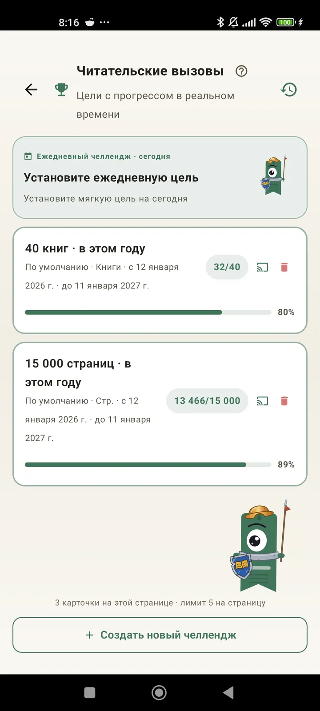

Узнай себя как читателя
Вызовы, Bingo, виджеты и другие возможности, чтобы выжать из чтения максимум. Новое в 3.7: виджеты вызовов и Bingo.

Читательские вызовы
Ставь цели по страницам, сериям или жанрам. До 15 активных вызовов бесплатно, без ограничений с Pro. Плюс настраиваемое задание дня, которое не учитывается в лимите.

Задание дня
Новая цель каждый день. Выполни задание до полуночи, чтобы не прервать серию.

Bingo для чтения
Каждый месяц два новых Bingo с тематическими клетками. Закрывай строки, столбцы или всю карточку.

Итоги недели
Каждый понедельник краткий взгляд на твою неделю: прочитанные страницы, общее время, серия и сравнение с предыдущей неделей.

Итоги месяца
Когда месяц заканчивается, Lecturameter подводит итоги: страницы, время, прочитанные книги, твой темп день за днём и книга месяца.

Виджет Bingo Pro
Карточка Bingo этого месяца всегда перед глазами: с закрытыми клетками и собранными линиями.

Виджет книги Бесплатно
Книга, которую ты читаешь, прямо на домашнем экране: обложка, название, автор, страницы и процент прогресса, всегда актуальные. Размер можно менять под любое место.
Серьёзно, бро, это приложение как терапия. Я перешёл от пары страниц в день к примерно 20 страницам в день и продолжаю растиОтзыв пользователя, пришедший по почте

Сравнение по месяцам Pro
Быстрый взгляд на последние месяцы, не открывая приложение. Столбцы со страницами за каждый месяц, текущий выделен, так что сразу видно, лучше ли этот месяц прошлого или хуже.

Виджет вызовов Pro
Твои активные вызовы и их прогресс на домашнем экране. Выбери, какие показывать, на экране «Вызовы».